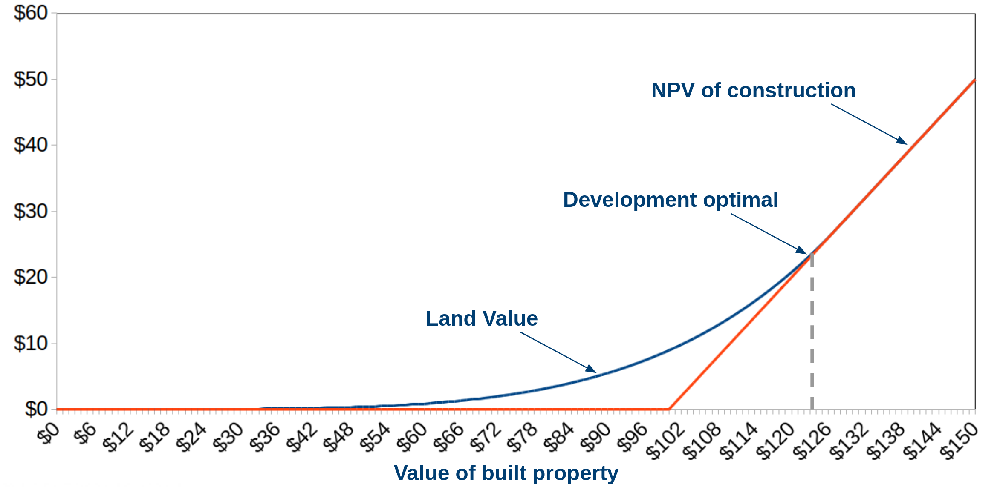
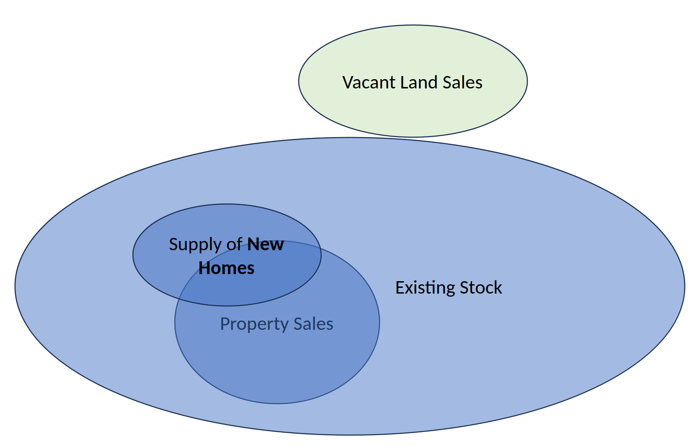
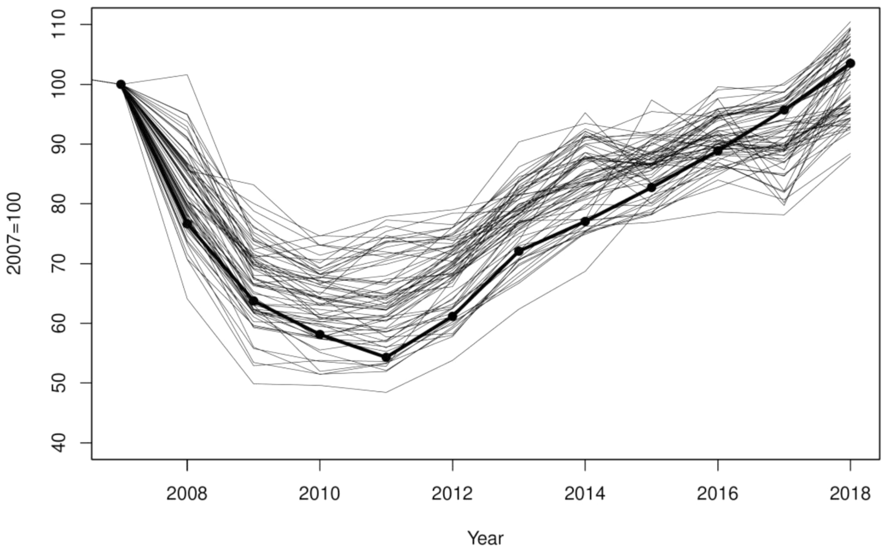
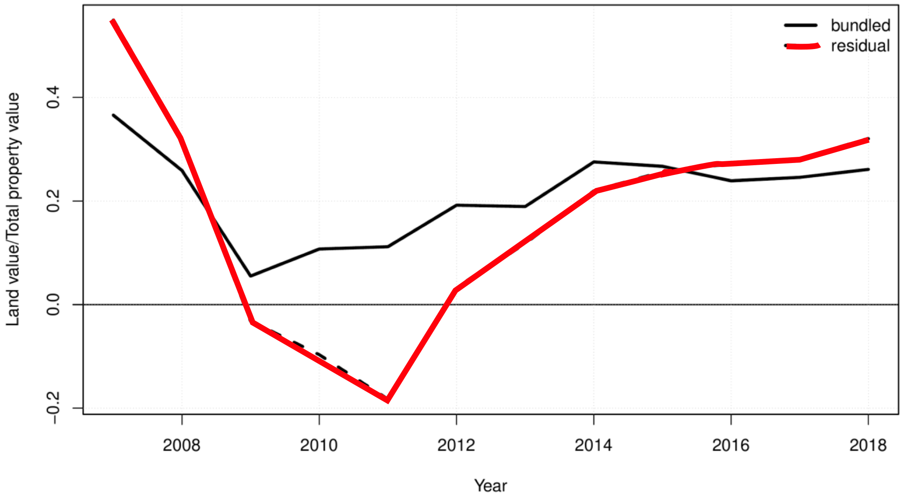
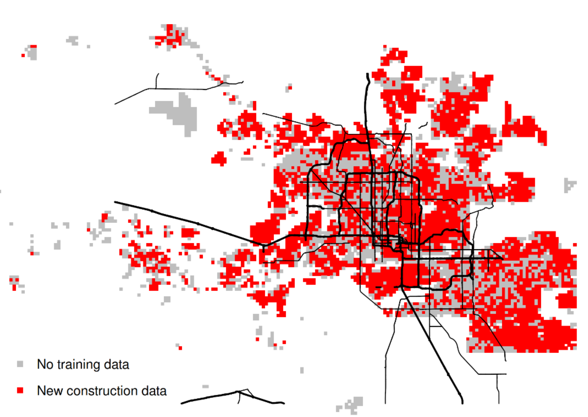
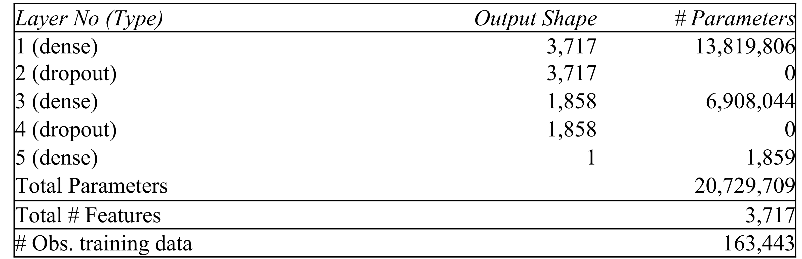
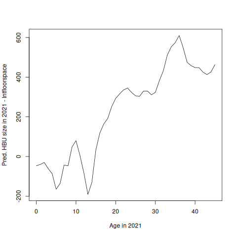
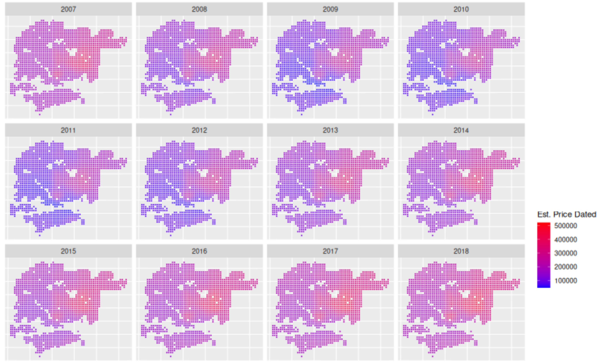
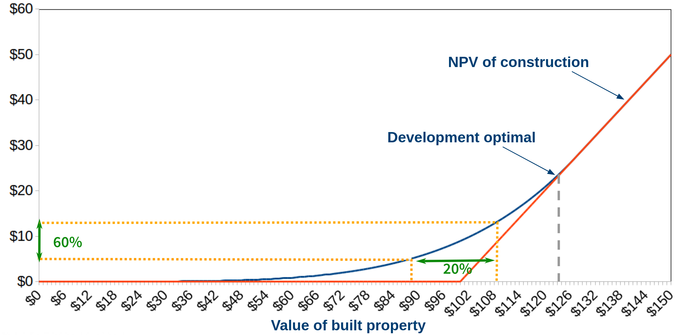

<br><br> <br><br> <br><br> ## <p><mark>Machine Learning Approaches for</mark></p><p><mark>Thin Real Estate Data</mark></p><span class="subtitle transparent50"><br/><mark>Thies Lindenthal / htl24@cam.ac.uk / Philadelphia, Jan. 6, 2026</mark></span>
## 1. More is more! <span class="subtitle"><br/>Preserve as much data as possible (joint work with Kahshin Leow)</span> * Stylised example: dataset with 50 obs. and 50 features. Features miss value in 3% of observations. <div class='figure'> <img src="imgs/missing-data-matrix-1.svg" height=450> </div>
## Even few Missing Values hurt!<span class="subtitle"><br/>In traditional regressions, we typically face a dilemma: Sacrifice obs or features?</span> * Same data, rows and columns ordered by row sums and occurance of first NA. <div class='figure'> <img src="imgs/missing-data-matrix-2.svg" height=450> </div>
## Modelling choices<span class="subtitle"><br/>Maximise rows?</span> * In (commercial) real estate, we often have relatively small samples. Can we afford to lose any obs? <div class='figure'> <img src="imgs/missing-data-matrix-3.svg" height=450> </div>
## Modelling choices<span class="subtitle"><br/>Or preserve feature richness?</span> * Real estate is high-dimensional. It's a waste to lose informative features. <div class='figure'> <img src="imgs/missing-data-matrix-4.svg" height=450> </div>
## Compromises? Mitigation?<span class="subtitle"><br/>Balance height/width of dataset? Focus on most relevant obs and features?</span> * Adjust functional form? Interpolate? Strategic data collection? * Entire textbooks cover topic: "Statistical Analysis with Missing Data" (Little and Rubin, 2019). <div class='figure'> <img src="imgs/missing-data-matrix-5.svg" height=450> </div>
## Real data: NCREIF CRE SALES<span class="subtitle"><br/>14,470 sales 1978–2020. 60 asset-level covariates</span> * Key variables: age, net inc., cap-ex, loan interest, % leased, net rentable area, cap rate, prop. type, manager group ID, MSA <div class='figure'> <img src="imgs/ncreif-na-table.svg" height=600> </div>
## Strategic reporting?<span class="subtitle"><br/>"Missingness" is not constant in time—and dynamics differ across features.</span> * Similar to Hughes & Nichols (2005): "No news is bad news: Monitoring, risk, and stale financial performance in commercial real estate" <div class='figure'> <img src="imgs/ncreif-time-trends.svg" height=400> </div>
<div class='figure'> <img src="imgs/ncreif-time-trends.svg" height=650> </div>
## Sparsity-aware ML Approaches<span class="subtitle"><br/>Tree example: XGBoost</span> * Forests of trees with/without features/obs + default directions when the feature needed for the split is missing. <div class='figure'> <img src="imgs/ncreif-tree-xgboost.png" height=400> </div>
## Model horse race<span class="subtitle"><br/>Sparsity-aware tree models benefit from keeping obs/features: More is more!</span> <div class='figure'> <img src="imgs/ncreif-model-comp.svg" height=570> </div>
## Compromises...<span class="subtitle"><br/>What if we drop the 10 features with the highest rates of NA's?</span> * Model 1 benefits from A LOT more training data. Model 3 has fewer features to train on. <div class='figure'> <img src="imgs/ncreif-reduced.svg" height=350> </div>
## Feature importance<span class="subtitle"><br/>Ranking of features changes when NAs are kept (robustness of many xAI attempts?) </span> <div class='figure'> <img src="imgs/ncreif-feature-importance.svg" height=350> </div>
## Marginal price effects <span class="subtitle"><br/>Marginal association between expected price and asset-level features</span> * Lagged appraisal values seem to matter either way... Age effects differ! <div class='figure'> <img src="imgs/ncreif-feature-effects.svg" height=350> </div>
## Marginal price effects <span class="subtitle"><br/>Marginal association between expected price and asset-level features</span> * Performance drops for all models if lagged MV is removed (makes sense). Drop is less drastic for Model 1 as obs. increase. <div class='figure'> <img src="imgs/ncreif-no-mv.svg" height=350> </div>
## 2. Spatial ML<span class="subtitle"><br/>Real estate data are thin. Spatial dependencies offer structure</span> * A few observations from "Rebuilding the City Inside and Out: A Durable Capital Model Applied to Residential Supply Change" (Nichols, Lindenthal and Clapp) * Fun research agenda—but easy to get side-tracked - <span class="transparent70">Clapp, J. and T. Lindenthal (2022). <a href="https://link.springer.com/article/10.1007/s11146-021-09834-4">“Urban land valuation with bundled good and land residual assumptions”</a>. JHE</span> - <span class="transparent70">Clapp, J., Cohen, J. and T. Lindenthal (2021). <a href="https://doi.org/10.1016/j.jhe.2022.101872">“Are Estimates of Rapid Growth in Urban Land Values an Artifact of the Land Residual Model?”</a>. JREFE</span> <br><br><br><br>
## This paper<span class="subtitle"><br/>Research idea in a nutshell</span> * Three interrelated research questions 1. <span class="transparent70">How to estimate land values in urban areas?</span> 2. <span class="transparent70">Will improved land value estimates enable better automatic valuations<br>and risk assessments?</span> 3. <span class="transparent70">Where will new supply in cities emerge?</span> <br><br><br><br>
## Property is a bundled good <span class="subtitle"><br/>Property Value = DCF of rents from structure at location + Option Value * If structure has been developed to highest and best use - Property value = Land value + Replacement cost of structure - Land value = Property value - Replacement cost of structure * If structure is not at HBU - Land value can be encumbered: current structure impairs value - Property value = Land value + Replacement cost of HBU structure - difference between current structure and HBU <br><br><br><br>
## Development/supply of new space<span class="subtitle"><br/>Samuelson-McKean Option Value for American Options <div class="figure"> <p></p> </div> * Kinked supply response to house price changes * Optimal (re)development depends on construction cost + sacrificed existing structure (if any)
## Data needs<span class="subtitle"><br/>Estimate land values, highest and best use configuration, property values</span> * Maricopa County assessor's office data, 2007–2021 - Complete, reliable, various angles offered. <div class="figure"> <p></p> </div>
## Intense dynamics<span class="subtitle"><br/>Maricopa County is ideal for studying house and land values throughout the cycle!</span> <div class="figure"> <p class="title">House Price Indices, Maricopa County: 2007–2018</p> <p></p> <p class="source">Source: <a href="https://doi.org/10.1016/j.jhe.2022.101872">Clapp & Lindenthal (2022)</a></p> </div>
## Land values are more volatile<span class="subtitle"><br/>Land values fall/rise faster than property values</span> <div class="figure"> <p class="title">Land-value ratios, based on residual approach (Don't do this at home)</p> <p></p> <p class="source">Source: <a href="https://doi.org/10.1016/j.jhe.2022.101872">Clapp & Lindenthal (2022)</a></p> </div>
## > 13 million obs.—still sparse!<span class="subtitle"><br/>Spatial data offer structure: half-mile grid, 12K points</span> <div class="figure"> <p class="title">New Supply of Real Estate, Maricopa County, 2007–2021</p> <p></p> </div>
## Trad. spatial econometrics?<span class="subtitle"><br/>No. We exploit spatial dependencies with Artificial Neural Networks</span> * Three models independently trained 1. Vacant Land Value = f(Land-related hedonics, time, distance to grid points) - Trained on sales of vacant, developable land 2. Highest best use (m<sup>2</sup>) = f(Est. vacant land value, land hedonics, time, distance to grid points) - Trained on all newly built homes (n=160K) 3. Property values = f(Est. vacant land value, HBU gap, land and structure hedonics, time, distance to grid points) - Trained on all relevant sales (n=350K) * ANN's offer functional flexibility and interactions
## Simple Models<span class="subtitle"><br/>Not very deep, moderately wide neural network designs perform well</span> * Basic hedonic features + matrix of inverted distances to half-mile grid * Runs on a modern laptop (sufficient RAM helpful) <div class="figure"> <p></p> </div>
## Better value surfaces<span class="subtitle"><br/>Machine Learning is great for <del>BIG</del> <ins>thin</ins> data</span></span> <div class="figure"> <img src="imgs/intspace.png" height=500> <p class="title">Highest and best use? Interior floor space of new residential units.</p> </div>
## Land Values<span class="subtitle transparent70"><br/>$/sqft</span> <p> </p> <p> </p> <p> </p> <p> </p> <p> </p> <p> </p> <p> </p> <p> </p> <p> </p> <p> </p> <p> </p> <p> </p> <p> </p> <p> </p>
## Actual use vs. HBU<span class="subtitle"><br/> If you could start again, on which parcels would you build more?</span> <div class="figure"> <img src="imgs/gaprel.png" height=500> <p class="title">Observed vs. optimal interior floor size</p> </div>
## Dynamic HBU<span class="subtitle"><br/>Cycle is reflected in size of new houses.</span> <div class="figure"> <p class="title">Average gap to 2021 HBU size, by property age</p> <p></p> </div>
## Better Mouse-Trap?<span class="subtitle"><br/>AVM's perform better with land value and gap to HBU estimates</span> * Pediction accuracy improves when gap to HBU and vacant land value estimates are fed into the model - CODs improve, regression to means reduced <div class="figure"> <p class="title">Property Values, Maricopa County</p> <p></p> </div>
## Asset-level investment risk<span class="subtitle"><br/>Real Options are a substantial contributor to asset values—and even more so—risk</span> <div class="figure"> <p class="title">Value of real option to supply more space</p> <p></p> </div>